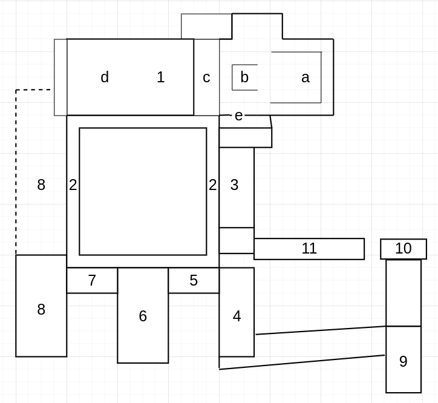

Der Plan des Klosters Wettingen wird mit der Abbildung darunter dargestellt. Dieser Aufbau entspricht dem klassischen Grundaufbau von einem Zisterzienserkloster.
Legende
Die Kirche, war das Zentrum eines Klosters
a. Das Presbyterium beinhaltet den Altar in der Kirche
b. War der Raum für den Mönchschor
c. Die Lettner war die Abtrennung von der Mönchskirche und der Laienkirche
d. Die Laienkirche war gedacht für das einfache Volk, mit denen die Mönche keinen Kontakt wollten
e. Die Nachttreppe diente dazu, dass Mönche in der Nacht schnell zur Kirche fürs Beten gelangen konnten
Der Kreuzgang war das Verbindungsstück zwischen den Teilen des Klosters und ist inspiriert mit den Innenhöfen von römischen Willen. Er trägt seinen Namen, weil dort oft Kreuzgänge von Jesus nachgespielt worden sind. Im Kreuzgang wurde das Ora praktiziert, als die geistliche Aktivität der Mönche, weshalb dort auch viele begraben wurden.
Im Kapitelsaal wurde Organisatorisches fürs Kloster besprochen. Er trägt seinen Namen, weil dort jeden Tag Kapitel aus den Benediktinerregeln vorgelesen worden ist.
Der Brudersall (Altes Palatorium) war ein Gemeinschaftsraum, in dem die Mönche einfache handwerkliche Tätigkeiten ausführten.
Das Kalefaktorium war der einzige beheizte Raum im ganzen Kloster, kann deswegen auch Heizraum genannt werden, obwohl diese Bezeichnung irreführend sein kann. Ein wichtiger Grund für das Kalefaktorium, war die Notwendigkeit der Duplikation von Büchern.
Das Refektorium war der Essraum eines Klosters.
Dieser Raum war die Küche
Das Konversenrefektorium war der Speisesaal der Konversen im Kloster
Eine Quelle stammt aus der Vergangenheit und bezeugt von etwas, was passiert ist. Eine Darstellung ist eine Geschichtsschreibung, welche einen Teil der Vergangenheit beschreibt.
Quellen können Schriftlich, Sachlich oder mündlicher Art sein
Darstellungen können Fachwissenschaftlicher Art oder Populärwissenschaftlicher Art sein
Im mittelalterlichen Europa herrschte eine konstante Angst vor dem Teufel bzw. der Hölle. Menschen wollten nach dem Tod in den Himmel gelangen und deswegen wurden ihre Handlungen stark beeinflusst durch diese Wertvorstellung.
Die Mönche wurden als eine Art Elite angesehen, die ihr ganzes Leben dem Ziel widmeten, nach dem Tod in den Himmel zu kommen, weshalb sie den strikten Benediktinerregeln folgten. Diese Regeln schrieben den Mönchen: Armut, Ehelosigkeit, Ortsbeständigkeit, keinen Sexualtrieb vor und vorderen: Beten und volle Konzentration auf Gott.
Die Tätigkeiten eins Mönchs waren hauptsächlich beten und Arbeiten, welche für die Existenzsicherung nötig waren.
Der Tagesablauf von einem Mönch hängte von dem jeweiligen Orden ab, aber alle hatten gemeinsamen, dass menschliche Bedürfnisse, wie Schlaf, Essen und Erholung, probiert worden sind, reduziert zu werden auf das Minimum. Dies bedeutete, dass der Tag sehr für, manchmal noch in der Nacht anfing und sehr spät endete. Dazu wurde am Tag mehrmals für lange Zeit gebetet.
Sie wollten den oben genannten irdischen Versuchungen entfliehen und ein Leben mit Einklang mit Gott führen. Sie erhofften sich zum Teil auch ein besseres Leben im Kloster, weil Klöster zu damaliger Zeit technologisch und medizinisch sehr vorgeschritten waren.
Ein sehr wichtiger Punkt war das Erhalten von Wissen. Klöster haben sehr viele kulturell bedeutsamen Schriften aufbewahrt, welche sonst verloren gegangen wären. Doch auch gesprochenes und gesungenes wurde in Klöstern für Generation weitergegeben
Bildung war im Mittelalter hauptsächlich nur in Klöstern verfügbar
Neue Orden wurden gegründet, um der Verweltlichung entgegenzuwirken, dabei wurden sich Gedanken gemacht, mit welchen konkreten Massnahmen man gegen dieses grosse Problem vorgehen wollte.
Die Cluniazenser wollten den schlechten Zusammenhalt zwischen den Klöstern verbessern, indem sie einen Oberabt einführten. Doch dies liess das Mutterkloster Cluny zu viel Macht zu besitzen. Sie wollten sich dazu mehr auf das geistliche konzentrieren, als auf die Arbeit, wie die Benediktiner.
Die Zisterzienser wollten dem Reichtum verbeugen und die Einhaltung der Grundregeln fördern, mit einer besonderen Machtaufteilung, Eigenversorgung und einem angepassten Tagesablauf.
Die Franziskaner wollten dem Reichtum vorbeugen, indem sie sich entschieden haben in Armut zu leben und der ganze Orden sollte kein Eigentum haben.
Der Benediktinerorden wurde Anfangs des 6. Jahrhunderts gegründet von Benedikt von Nursia, von wo er seinen Namen trägt. Jedes Kloster galt als eine unabhängige Einheit.
Der Cluniazenserorden wurde im Jahre 910 gegründet und sein Name leitet sich vom Ursprungskloster Cluny ab. Dabei wurden die meisten Klöster durch das Ursprungskloster verwaltet.
Der Zisterzienserorden wurde im Jahre 1112 gegründet und der Name leitet sich vom Ursprungskloster Cîteaux ab. Mutterklöster konnten weiter Tochterklöster erbauen lassen, welche den Mutterklöstern unterlagen und ebenfalls weitere Tochterklöster erbauen durften.
Klöster waren sehr effizient in der Landwirtschaft, besassen viel Land und haben auch Handel betrieben. Dies führte zu grossem Reichtum, welches durch gewisse Menschen ausgebeutet wurde. Dabei kamen Leute ins Kloster, wie Kaufleute, wobei ihr Ziel ausschliesslich war, Geld zu verdienen. Handel zog mit sich den Kontakt mit der Aussenwelt, den man verhindern wollte. In der Aussenwelt drohte die menschliche Natur zu gewinnen, was oft zu Sexualtrieb führte. Durch das grosse Reichtum der Klöster fingen sie an sich das Leben am Anfang bequemer zu machen bis hin dazu, dass sie Luxusgüter kauften, welche als Statussymbole galten.
Die Zisterzienser führten eine sehr strenge Organisationsstruktur ein, welche auf drei Prinzipien basierte
Bei der Filiation blieben die Tochterklöster mit dem Mutterkloster verbunden. Diese Tochterklöster konnten danach ein Ausgangspunkt werden für weitere Tochterklöster, als Filialgründer.
Das Konzept der Visitationen ermöglichte die Kontrolle der Klöster untereinander. Dabei musste jedes Jahr das Mutterkloster eine Visitation durchführen bei allen seinen Tochterklöstern, um die Einhaltung der Regeln zu garantieren. Hingegen haben alle Tochterklöster gemeinsam Visitationen durchgeführt beim Mutterkloster.
Generalkapitel waren jährliche Versammlung von allen Äbten, auf welchen sich ausgetauscht wurde und wichtige Sachen besprochen wurden, wie der Bau neuer Klöster. Die Generalkapitel ermöglichten im Mittelalter eine gute Kommunikation in ganz Europa, was dazu führte, dass sich zwischen den Zisterzienser Technologien schnell verbreiteten.
Nach den Vorlesungen der Benediktinischer Regeln jeden Tag im Kapitelsaal. Wurden alle Mönche gefragt, ob sie gewisse Regeln gebrochen haben, oder ob jemand jemanden gesehen hat eine Regel brechen. Dieser Mönch konnte dann mit Strafen rechnen, bis hin zu Freiheitsstrafen, weil es dazu ein Gefängnis gab in Zisterzienser Klöster.
Mönche waren sehr beschäftigt mit geistlichen Aufgaben, weshalb es schwierig war für sie unabhängig von der Aussenwelt zu sein, sie mussten also alle Arbeiten selber durchführen. Für dieses Problem gab es Konversen, auch Laienbrüder genannt, welchen wie Mönchen die Grundregeln des Mönchtums aufgedrängt wurden. Die Konversen durften jedoch Kontakt haben mit der Aussenwelt in speziellen Situationen und haben handwerkliche Arbeiten ausgeübt. Sie durften aber keinen direkten Kontakt zwischen Mönchen haben.
Die Gründungslegende besagt, dass Heinrich von Rapperswil, welcher ein adliger Ritter war, von einem Kreuzzug von Jerusalem zurückschwamm. Dabei ist er mit seiner Flotte in einen sehr starken Storm gefangen worden. Hinrich von Rapperswil hat dann angefangen zu beten und Maria gebeten sie zu bewahren vor dem Sturm. Er hat versprochen, dass wenn sie das machen würde, dass er ein Kloster erbauen würde. Danach erschien ein Stern am Himmel, welchen er als ein Zeichen der Erlösung interpretierte. Schlussendlich hat er überlebt, vergass aber sein Versprechen. Bis er eines Tages durch Wettingen ritt und den gleichen Stern nochmals erblickte, was ihn an sein Versprechen erinnerte. Von dieser Geschichte kann man auch den Namen Stella Maris ableiten, welcher Meeresstern bedeutet.
Belegte Gründe für das Erbauen von Klöstern im Mittelalter waren
Die Sicherung von Land konnte mit Klöstern gesichert werden. Im Mittelalter gab es kein Grundbuch und wenn auf einem Stück Land ein Kloster gebaut wurde, oder es einem Kloster abgegeben wurde, hat sich niemand mehr getraut es wegzunehmen, weil dies sonst ein Verstoss gegen die Kirche wäre.
Köster waren ein Statussymbol
Klöster waren wichtige Friedhöfe für Adelige, für welche die Mönche nach dem Tod beteten.
Im Jahre 1227 wurde das Kloster, als Tochterkloster von Salem gegründet durch Heinrich von Rapperswil
Um den Anfang des 16. Jahrhunderts hat Peter Schmid den Ostflügel erschaffen
Im Jahre 1507 ist das Kloster abgebrannt
Im Jahre 1841 wurde das Kloster aufgehoben, mit allen Klöstern im Kanton Aargau.
Wichtige Wappen sind
Das Wappen des Klosters mit einer Meerjungfrau darauf
Das Wappen von Heinrich von Rapperswil, mit einer roten Rose, als charakteristischer Erkennungspunkt
Auf dem Wappen von Peter Schmid ist ein Hammer zu erkennen
Wichtige Personen sind
Äbte, welche mit einem Abtstab abgebildet werden
Der Gründer eines Klosters, welcher mit einem Kloster in seinen Händen abgebildet wurde
Maria ist zu erkennen an ihren blauen Gewändern
Robert von Molesme war der Gründer des Zisterzienserorden und kann an einem weissen Gewand erkannt werden, welches typisch für Zisterzienser war
Bernard von Clairvaux war ein sehr beeinflussender Zisterzienser